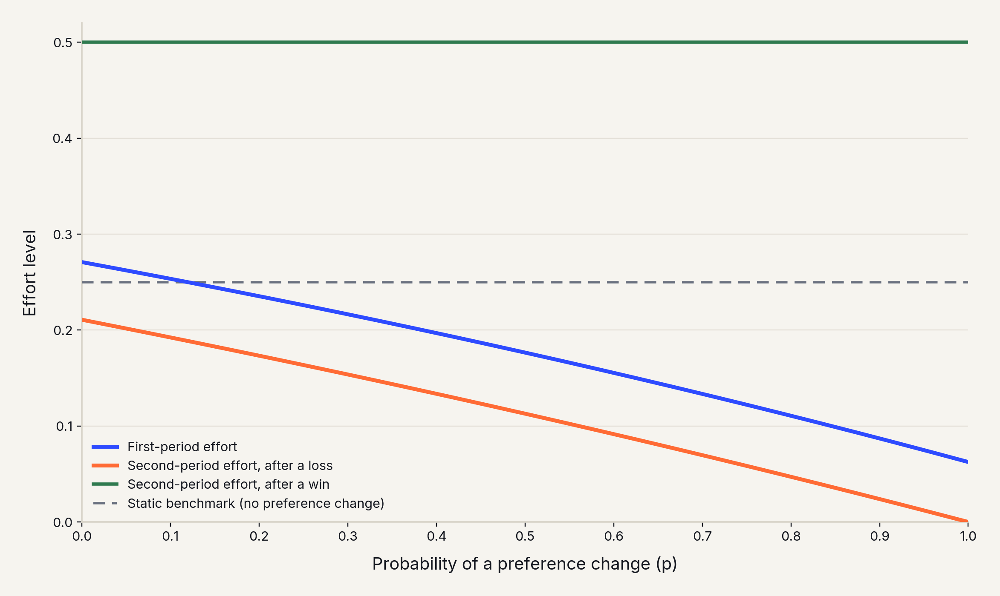
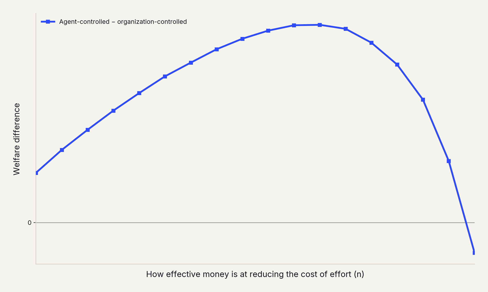
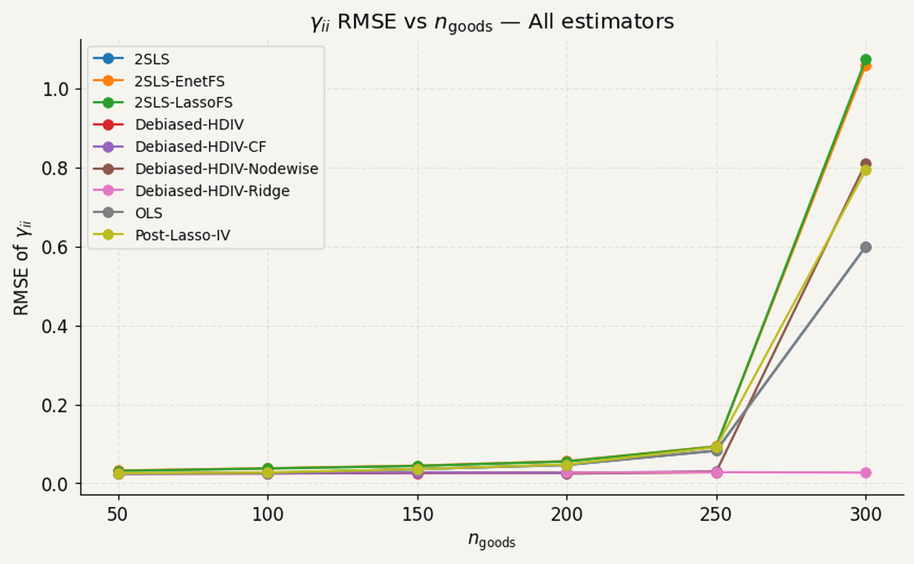

Shabab Ahmed
University of Washington · Contract Theory & Structural Estimation
I work in contract theory and structural modeling. My research studies the design of incentives when preferences or organizational constraints change. I also ask how to estimate demand reliably from complex, real-world data. I have applied this research as an Economist Intern at Amazon.
About
I am a Ph.D. candidate in Economics at the University of Washington, advised by Fahad Khalil and Jacques Lawarrée. I expect to finish in Fall 2026, and I am on the industry job market this year.
I hold an M.A. in Economics and an M.S. in Applied Mathematics from UW. I also have a B.A. in Mathematics and Economics from Colby College, where I graduated Magna Cum Laude and was elected to Phi Beta Kappa.
Experience
Economist Intern, Amazon
Bellevue, WA · Jul–Oct 2025For Amazon's Project Kuiper, I built structural demand models using large-scale survey data to estimate customer preferences. I used these estimates to project market share across different product configurations and presented the results to leadership across several teams. I also built a Python tool that let the demand team independently enter different prices and configurations to compare projected market share and revenue under different scenarios.
Research
Dissertation Chapters
Dynamic Moral Hazard under Preference Change
Does a team try less today just because it might start tanking tomorrow?
I study a contracting model where an organization's priorities may shift after an early failure. Using the NFL draft as a case study, where teams eliminated from contention can benefit from losing through better draft position, I show that a higher probability of this future shift reduces effort today. This "tanking" happens even before the team is eliminated from playoff contention. The effect compounds over time: weaker teams, already more likely to face the shift, pull back further and grow even weaker, resulting in a vicious cycle. I also show how this pattern can be eliminated, for instance if losing carries no benefit at all.

First-period effort (blue) declines as the probability of a preference change rises, even though that change hasn't happened yet.
Fixed Budget Allocation under Hidden Effort
When effort can't be observed, who should control how a fixed budget gets spent, the agent doing the work, or the organization that set it?
I develop a model that explains patterns like budget hoarding and end-of-year spending spikes as rational responses to the incentives needed to motivate effort that can't be directly observed. When the agent controls how a fixed budget is spent, he saves it for the period he expects to work hardest, concentrating resources at the end. When the principal controls spending instead, they spend more early, prioritizing early success to build momentum. Shifting control to the agent costs the principal some profit, but can raise total surplus when money only moderately reduces the cost of effort.

Letting the agent control spending raises total welfare across most of the range, though the effect is small, and reverses once money becomes very effective at reducing effort cost.
High-Dimensional Demand Estimation
Was a classic model of consumer demand abandoned because it doesn't work with today's huge datasets, or because it hadn't been combined with the right tools to make it work?
The Almost Ideal Demand System, a widely used model of consumer demand from 1980, has largely been abandoned for use with modern retail data. Modern datasets often cover hundreds of products at once, and the model's parameters grow quickly as the number of products grows. I argue the model was sidelined because it hadn't been combined with modern machine learning techniques. I adapt a debiased Lasso estimator that regularizes both the endogenous regressors and the many instruments, then corrects for the bias that regularization introduces. Simulations show the estimator recovers stable price elasticities where standard methods fail.

As the number of goods approaches the sample size, error explodes for most estimators. The ridge and cross-fitted variants of the debiased estimator stay accurate throughout.
Projects
-
2020
NBA Decade Comparison: PCA and Machine Learning Analysis
Does a player's box-score stat line carry a hidden signature of their era or position, or does it mostly just reflect how good they are?
With a classmate, I built classifiers on 13,000 player-season observations from Basketball Reference, using roughly 95 features per player. PCA showed the first two components capture about 60% of the variance in the data. Using that feature space to directly classify a player's era or position was only modestly successful: about 38% accuracy for decade and 50% for position. This suggests box-score stats alone don't cleanly separate eras or roles. Predicting a player's Win Shares quartile worked much better: a model trained only on 1990s players correctly classified held-out 1990s players into the right quartile 72.6% of the time, cross-validated over 50 iterations.
-
2019
Game Theory in Cricket
Do professional athletes actually play the mixed strategies that game theory predicts?
Most tests of mixed-strategy Nash equilibrium rely on lab experiments, which often fail to show that real people behave as the theory predicts. Professional sports offer a better setting. For my honors thesis, I built a game-theoretic model of bowler-batsman strategy in cricket. I tested it in Stata against real match data, hand-coded from commentary of the 2017 ICC Champions Trophy. In a simplified model, players' actual strategy frequencies matched the model's Nash equilibrium predictions within one standard deviation, providing direct evidence of equilibrium play. The match, however, breaks down in a richer strategy set: bowlers were predicted to almost never throw one pitch type, yet did so over a third of the time.
Teaching
ECON 485 — Game Theory
Independent Instructor · UWECON 200 — Introduction to Microeconomics
Independent Instructor · UWBBUS 310 — Managerial Economics
Independent Instructor · UWGraduate & Undergraduate Economics, various courses
Teaching Assistant · UW · 2019–presentOther Experience
Summer Study Section Instructor
UW Math and Science Bound Upward · Summer 2024 & Summer 2026Mentored students through independent research projects. Guided a hands-on solar car build.
Intramural Referee
UW Recreation · 2023Officiated soccer games, including playoff matches, and handled on-field conflicts.
Contact
Reach me by email, or find my CV and profiles below.